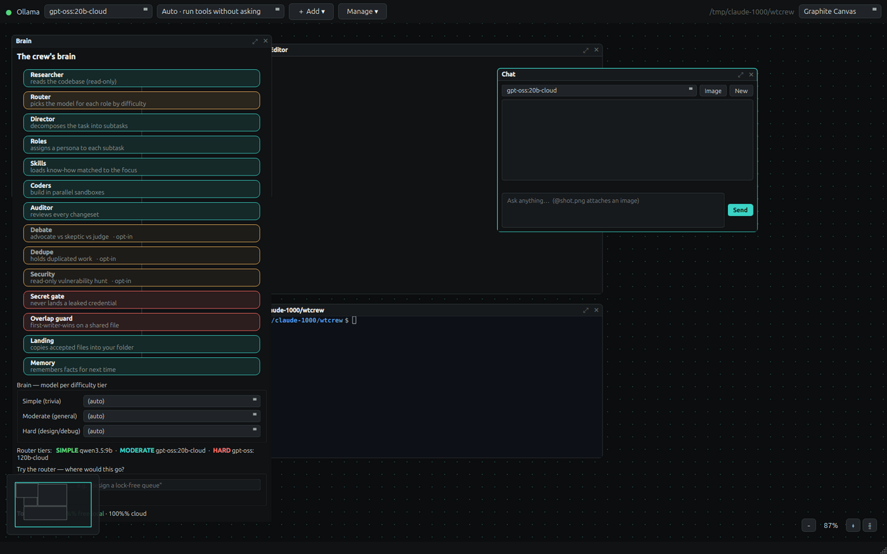
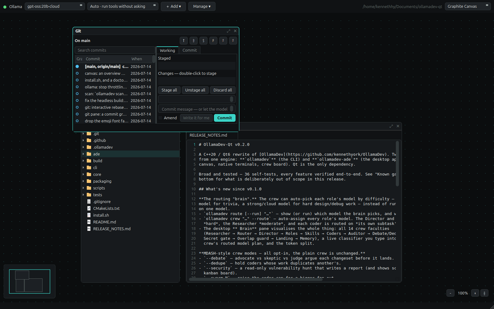

Terminals, editors, chats, git, and a crew of local models — floating windows on a pannable, zoomable canvas. When a task is big, hand it to the crew and watch it work: a Director plans, coders build each piece in its own git worktree, an Auditor reads every diff before a line touches your files.
C++20 / Qt6 · Linux · free and open source · no account, no telemetry, no credits
Terminals, editors, chats, the crew, git — floating windows on a pannable, zoomable canvas. Put things where they make sense and leave them there.

The Brain pane (the whole crew pipeline), a chat pane, a terminal — and the overview map, bottom left.
One command. A Director decomposes the task, coders build the pieces in parallel, an Auditor reviews every changeset, and clean work lands in your folder. Contested work waits for you.
# plan it, build it in parallel, audit it, land it $ ollamadev crew "add rate limiting to the API and document it" ▸ plan: director is decomposing the task coder #1 [coder] ollama:gpt-oss:120b-cloud · hard coder #2 [docs] ollama:gpt-oss:20b-cloud · moderate ▸ build: 2 coders working ▸ audit: reviewing every changeset ▸ land: applying clean work applied #1 (2 files) held #2 — audit flagged: adds code beyond the docs-only subtask ▸ done: 1 applied · 1 held
Real worktrees sharing the object store — not copies of your repo. Each coder gets a real git repo it can read the history of, and your working tree is never touched until you accept.
Every changeset is read before it lands. Wrong, unsafe, or outside the subtask it was given — it gets held for you instead of applied.
A credential in a diff blocks the landing and blocks the commit. Findings are redacted, so the secret is never echoed into a log or a model's context.
crew resume keeps every coder that finished — landing their work from disk with
zero model calls — and the Director re-plans only what is left.
crew steer 2 "use the existing logger" — it arrives between iterations and
changes what that coder does next.
Two coders touching the same file is caught, not merged blindly. The second one is held for you to look at.
Difficulty is a property of the subtask, not the role. With --route, each
piece of work is classified and given a model that fits it — so "rename a variable" doesn't cost
what "design the parser" costs.
$ ollamadev route "rename a variable" → simple ollama:qwen3.5:9b (short lookup-style question) $ ollamadev route "design a lock-free queue" → hard ollama:gpt-oss:120b-cloud
All opt-in. With none of these set, the crew is exactly as it was.
| Flag | What it does |
|---|---|
--route | Pick each subtask's model by difficulty. |
--amplify N | N independent Director plans, keep the consensus shape — and an N-reviewer audit panel where a strict majority is needed to land anything. A 2–2 split holds the change. |
--debate | Advocate vs skeptic vs judge, per changeset. A contested change has to survive an argument. |
--dedupe | Hold a coder whose work duplicates another's. |
--security | A read-only vulnerability hunt. The crew writes a report and changes nothing. |
--learn | Distil what this run taught into memory and a reusable skill, and load it back on the next run. |
--swarm N | Raise the coder cap for a wider fan-out. |
A real git client on the canvas: the commit graph, staged and unstaged changes, an inline diff — and an interactive rebase where the model proposes the plan and you approve every line of it.

The model reads your commits and proposes which to fold together and which to reword. You see every line before anything is rewritten, and a backup ref is taken first — so it is always undoable.
A Conventional Commit written from the staged diff — on a dedicated git.model,
because a commit message is a small job that shouldn't cost what chat costs.
Every destructive action names what it will destroy. Force-push is always
--force-with-lease. Unstage never means "delete my edit".
Read, write, edit, patch, glob, grep, bash, background shells, semantic code search, the
web — and 17 git_* tools. Native Ollama function calling, no text-scraping fallback.
An Agent Client Protocol server, so an editor can drive it as an agent — permission prompts and all. And a language server: hover, completion, go-to-definition, rename, real compiler-backed diagnostics.
Ollama local and cloud, plus Claude Code, Codex, Gemini, cursor-agent, opencode, qwen. Mix providers inside one crew — a different backend per coder.
@shot.png in any prompt. Works in the CLI, the one-shot, and the desktop chat.
Progressive-disclosure skills, wiki-linked memory, MCP servers, and plugins that contribute skills, commands, hooks and MCP servers — installed disabled, and enabling shows you the exact commands first.
Local speech-to-text. Steer the crew without typing.
Qt6 is the only dependency. There is no account, no key, and nothing to sign up for.
# Debian / Ubuntu $ sudo apt install build-essential cmake ninja-build qt6-base-dev \ qt6-webengine-dev libqt6svg6-dev $ git clone https://github.com/kennethyork/OllamaDev-Qt.git $ cd OllamaDev-Qt $ ./install.sh # builds, tests, installs the CLI + desktop app $ ollamadev setup # picks and pulls a model for your hardware $ ollamadev doctor # check it over
You need Ollama running. Cloud models work through
your own ollama signin — there are no API keys in this app, and nothing is
routed through anyone else's account.
| Command | |
|---|---|
ollamadev | Interactive agent. -c resumes this folder's session. |
ollamadev "…" | One-shot. It reads, edits, runs — then stops. |
ollamadev crew "…" | The parallel bench: plan → build → audit → land. |
ollamadev crew resume | Finish an interrupted run. Keeps what's done. |
ollamadev board | Held work, waiting on you. crew accept 2 / crew discard 2. |
ollamadev commit -a | AI commit message. A leaked secret blocks it. |
ollamadev ship | Stage → scan → commit → ask → push. |
ollamadev tidy 10 | AI interactive rebase over the last 10 commits. |
ollamadev scan | Hunt the tree for leaked credentials. |
ollamadev route "…" | Which model would the brain pick, and why. |
ollamadev code-search "…" | Search the repo by meaning, not by string. |
ollamadev eval | A fixed task suite → a pass rate you can compare models with. |
ollamadev acp / lsp | Serve an editor over ACP, or as a language server. |
ollamadev-ade | The desktop app. |
Being straight with you. This is a real tool that does real work, but it is early and it is one person's project.
install.sh runs them
on every build. Every feature on this page was driven end-to-end against a live model
before it was written down. But it has one user.